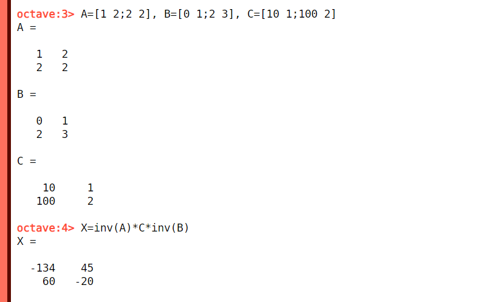
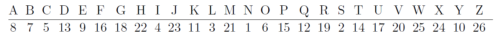

Matriisiyhtälöt
Contents
Matriisiyhtälöt#
Yhtälössä voi tuntemattomana joskus olla kokonainen matriisi eikä vain yksittäinen matriisin alkio. Jos tuntematon matriisi on yhtälössä kerrottu jollakin luvulla, tai jos siihen on lisätty tai siitä on vähennetty jokin tunnettu matriisi, yhtälö ratkeaa samoilla toimenpiteillä kuin tavalliset ensimmäisen asteen yhtälöt. Yhtälöön voi siis lisätä tai siitä voi vähentää puolittain jonkin matriisin, kuten tavallisen yhtälön ratkaisussa voidaan tehdä reaaliluvuilla. Matriisiyhtälön voi myös kertoa puolittain jollakin luvulla.
Esimerkki
Ratkaise matriisi \(X\) yhtälöstä \(X+\begin{bmatrix}3&2\\1&5\end{bmatrix}=\begin{bmatrix}10&6\\2&0\end{bmatrix}\).
Ratkaisu
Vähennetään yhtälön molemmilta puolilta \(\begin{bmatrix}3&2\\1&5\end{bmatrix}\):
\(X=\begin{bmatrix}10&6\\2&0\end{bmatrix}-\begin{bmatrix}3&2\\1&5\end{bmatrix}\)
\(X=\begin{bmatrix} 10-3&6-2\\2-1&0-5\end{bmatrix} = \begin{bmatrix}7&4\\1&-5\end{bmatrix}\)
Esimerkki
Ratkaise matriisi \(X\) yhtälöstä \(3X=\begin{bmatrix}9&24\\-3&27\end{bmatrix}\).
Ratkaisu
Jaetaan yhtälön molemmat puolet luvulla 3, eli kerrotaan luvulla \(\frac{1}{3}\):
\(X=\frac{1}{3} \begin{bmatrix}9&24\\-3&27\end{bmatrix}\)
\(X=\begin{bmatrix}\frac{9}{3}&\frac{24}{3} \\ -\frac{3}{3}&\frac{27}{3}\end{bmatrix}\)
\(X=\begin{bmatrix}3&8\\-1&9\end{bmatrix}\)
Käänteismatriisien hyödyntäminen#
Jos tuntematon matriisi esiintyy yhtälössä kahden (tai useamman) matriisin tulossa, hyödynnetään käänteismatriiseja ja niiden ominaisuutta: \(A^{-1}A=I, AA^{-1}I\). Matriisien jakolaskua ei ole määritelty, vaan sitä vastaa käänteismatriisilla kertominen. Se, miten käänteismatriisilla kertominen pitää suorittaa, riippuu siitä, millaisessa matriisitulossa tuntematon matriisi esiintyy.
Ratkaise matriisi \(X\) yhtälöstä \(AX=B\), missä \(A\) ja \(B\) ovat tunnettuja matriiseja.
Kerrotaan puolittain vasemmalta \(A\):n käänteismatriisilla: \(A^{-1}AX=A^{-1}B\).
Yhtälö sievenee muotoon \(IX=A^{-1}B\) ja edelleen \(X=A^{-1}B\).
Octave-komento: X=inv(A)*B
Ratkaise matriisi \(X\) yhtälöstä \(XA=B\), missä \(A\) ja \(B\) ovat tunnettuja matriiseja.
Kerrotaan yhtälön puolittain oikealta \(A\):n käänteismatriisilla: \(XAA^{-1}=BA^{-1}\), joka sievenee muotoon \(XI=BA^{-1}\) ja edelleen \(X=BA^{-1}\). Kertolasku pitää suorittaa molemmilla puolilla yhtälöä samalla tavalla: käänteismatriisi \(B^{-1}\) tulee kertolaskuun viimeiseksi!
Octave-komento: X=B*inv(A)
Ratkaise matriisi \(X\) yhtälöstä \(AXB=C\), missä \(A\), \(B\) ja \(C\) ovat tunnettuja matriiseja.
Yhtälön molemmat puolet pitää kertoa vasemmalta käänteismatriisilla \(A^{-1}\) ja oikealta käänteismatriisilla \(B^{-1}\):
\(A^{-1}AXBB^{-1}=A^{-1}CB^{-1}\)
Käänteismatriisien ja vastaavien matriisien tulojen paikalle tulee yksikkömatriisi:
\(IXI=A^{-1}CB^{-1}\)
Yksikkömatriisin laskusääntöjen mukaan \(IX=X\) ja \(XI=X\), joten ratkaisu on
\(X=A^{-1}CB^{-1}\)
Octave-komento: X=inv(A)*C*inv(B)
Näitä laskusääntöjä voi yhdistää matriisien yhteen- ja vähennyslaskuun sekä reaaliluvuilla kertomiseen seuraavien esimerkkien mukaisesti.
Esimerkki
Ratkaise \(X\) yhtälöstä \(AXB=C\), jossa \(A=\begin{bmatrix}1&2\\2&2\end{bmatrix}, B=\begin{bmatrix}0&1\\2&3\end{bmatrix}\) ja \(C=\begin{bmatrix}10&1\\100&2\end{bmatrix}\).
Ratkaisu
Yhtälö \(AXB=C\) on ensin kerrottava puolittain vasemmalta \(A\):n käänteismatriisilla, siis: \(A^{-1}AXB=A^{-1}C\).
Sievennetään vasen puoli: \(A^{-1}AX=IX=X\), jonka jälkeen yhtälö on muotoa \(XB=A^{-1}C\).
Yhtälö \(XB=A^{-1}C\) on kerrottava puolittain oikealta \(B\):n käänteismatriisilla, siis: \(XBB^{-1}=A^{-1}CB^{-1}\).
Sievennetään vasen puoli: \(XBB^{-1}=XI=X\), jonka jälkeen yhtälö on muodossa \(X=A^{-1}CB^{-1}\).
Lasketaan nyt A:n ja B:n käänteismatriisit menetelmällä \(Z=\begin{bmatrix}a&b\\c&d\end{bmatrix} \rightarrow Z^{-1}=\frac{1}{ad-bc} \begin{bmatrix}d&-b\\-c&a\end{bmatrix}\).
\(A=\begin{bmatrix}1&2\\2&2\end{bmatrix} \rightarrow A^{-1}=\frac{1}{1\cdot 2-2\cdot 2} \begin{bmatrix}2&-2\\-2&1\end{bmatrix}=-\frac{1}{2} \begin{bmatrix}2&-2\\-2&1\end{bmatrix}=\begin{bmatrix}-1&1\\1&-\frac{1}{2}\end{bmatrix}\)
\(B=\begin{bmatrix}0&1\\2&3\end{bmatrix} \rightarrow B^{-1}=\frac{1}{0\cdot 3-1\cdot 2} \begin{bmatrix}3&-1\\-2&0\end{bmatrix} = -\frac{1}{2} \begin{bmatrix}3&-1\\-2&0\end{bmatrix}=\begin{bmatrix}-\frac{3}{2}&\frac{1}{2}\\1&0\end{bmatrix}\)
Nyt saadaan
\(X=A^{-1}CB^{-1}=\begin{bmatrix}-1&1\\1&-\frac{1}{2}\end{bmatrix} \begin{bmatrix}10&1\\100&2\end{bmatrix} \begin{bmatrix}-\frac{3}{2}&\frac{1}{2}\\1&0\end{bmatrix}\)
\(X=\begin{bmatrix}-1&1\\1&-\frac{1}{2}\end{bmatrix} \begin{bmatrix} 10\cdot(-\frac{3}{2})+1\cdot 1&10\cdot \frac{1}{2}+1\cdot 0 \\ 100\cdot (-\frac{3}{2})+2\cdot 1&100\cdot \frac{1}{2}+2\cdot 0\end{bmatrix}\)
\(X=\begin{bmatrix}-1&1\\1&-\frac{1}{2}\end{bmatrix} \begin{bmatrix}-14&5\\-148&50\end{bmatrix}\)
\(X = \begin{bmatrix}-1\cdot (-14)+1\cdot (-148)&-1\cdot 5+1\cdot 50\\ 1\cdot (-14)+(-\frac{1}{2}\cdot (-148)&1\cdot 5-\frac{1}{2}\cdot 50\end{bmatrix}\)
\(X=\begin{bmatrix}-134&45\\60&-20\end{bmatrix}\)
Esimerkki
Ratkaise edellisen esimerkin matriisiyhtälö Octavella.
Ratkaisu
Määritellään matriisi \(A\) komennolla: A=[1 2;2 2]
Määritellään matriisi \(B\) komennolla: B=[0 1;2 3]
Määritellään matriisi \(C\) komennolla: C=[10 1;100 2]
Kaikki matriisit voi syöttää komentoriville kerrallakin: A=[1 2;2 2], B=[0 1;2 3], C=[10 1;100 2]
Lasketaan tulos ja tallennetaan se nimellä \(X\) komennolla: X=inv(A)*C*inv(B)

Esimerkki
Ratkaise yhtälö \(4X+\begin{bmatrix}10 & 2 \\ 0 & 7\end{bmatrix}=\begin{bmatrix}20 & 30 \\ 35 & 25 \end{bmatrix}\).
Ratkaisu
Vähennetään aluksi yhtälön molemmilta puolilta matriisi \(\begin{bmatrix}10 & 2 \\ 0 & 7\end{bmatrix}\):
\(4X=\begin{bmatrix}20 & 30 \\ 35 & 25 \end{bmatrix}-\begin{bmatrix}10 & 2 \\ 0 & 7\end{bmatrix}\)
Sievennetään oikea puoli:
\(4X=\begin{bmatrix}10 & 28 \\ 35 & 18 \end{bmatrix}\)
Kerrotaan molemmat puolet luvulla \(\frac{1}{4}\):
\(X=\frac{1}{4}\begin{bmatrix}10 & 28 \\ 35 & 18 \end{bmatrix}\)
Suoritetaan kertolaskut alkioittain:
\(X=\begin{bmatrix}\frac{10}{4} & \frac{28}{4} \\ \frac{35}{4} & \frac{18}{4} \end{bmatrix}\)
Lopputulos voidaan vielä sieventää:
\(X=\begin{bmatrix}\frac{5}{2} & 7 \\ \frac{35}{4} & \frac{9}{2} \end{bmatrix}\)
Jos yhtälö ratkaistaan Octavella, niin ensimmäistä vähennyslaskua ei tarvitse laskea välivaiheena. Sekä vähennyslaskun että neljäsosalla kertomisen voi kirjoittaa suoraan komentoon: X=1/4*([20 30; 35 25]-[10 2; 0 7])
Toinen vaihtoehto on määritellä ensin laskussa esiintyvät matriisit, esimerkiksi A=[20 30; 35 25] ja B=[10 2; 0 7], ja sitten kirjoittaa komento muodossa X=1/4*(A-B).
Esimerkki
Ratkaise yhtälö \(X\begin{bmatrix}1 & 2 \\ 3 & 4\end{bmatrix}+\begin{bmatrix}1 & 0 \\ 2 & 1\end{bmatrix}=\begin{bmatrix}20 & 30 \\ 35 & 25 \end{bmatrix}\).
Ratkaisu
Vähennetään ensin matriisi \(\begin{bmatrix}1 & 0 \\ 2 & 1\end{bmatrix}\) yhtälön molemmilta puolilta:
\(X\begin{bmatrix}1 & 2 \\ 3 & 4\end{bmatrix}=\begin{bmatrix}20 & 30 \\ 35 & 25 \end{bmatrix}-\begin{bmatrix}1 & 0 \\ 2 & 1\end{bmatrix}\)
Sievennetään oikea puoli:
\(X\begin{bmatrix}1 & 2 \\ 3 & 4\end{bmatrix}=\begin{bmatrix}19 & 30 \\ 33 & 24 \end{bmatrix}\)
Kerrotaan molemmat puolet matriisin \(\begin{bmatrix}1 & 2 \\ 3 & 4\end{bmatrix}\) käänteismatriisilla siten, että käänteismatriisi jää kertolaskuun viimeiseksi. Yhtälön vasemmalla puolella matriisin ja käänteismatriisin tulo tuottaa yksikkömatriisin, ja koska \(XI=X\), ratkaisuksi saadaan
\(X=\begin{bmatrix}19 & 30 \\ 33 & 24 \end{bmatrix}\begin{bmatrix}1 & 2 \\ 3 & 4\end{bmatrix}^{-1}\)
Käänteismatriisi on \(-\frac{1}{2}\begin{bmatrix}4 & -2 \\-3 & 1\end{bmatrix}=\begin{bmatrix}-2 & 1 \\ \frac{3}{2} & -\frac{1}{2}\end{bmatrix}\), joten vastaukseksi tulee
\(X=\begin{bmatrix}19 & 30 \\ 33 & 24 \end{bmatrix}\begin{bmatrix}-2 & 1 \\ \frac{3}{2} & -\frac{1}{2}\end{bmatrix}=\begin{bmatrix}7 & 4 \\ -30 & 21\end{bmatrix}\)
Octavella yhtälö ratkeaisi komennolla X=([20 30; 35 25]-[1 0; 2 1])*inv([1 2; 3 4]).
Salausmatriisit
Viestien salaus on eräs esimerkki matriisiyhtälöjen ja käänteismatriisien hyödyntämisestä. Eräs tapa koodata viestejä salattuun muotoon on määritellä jokaista kirjainta vastaava luku sekä tietty salausmatriisi. Salausmatriisin on oltava säännöllinen neliömatriisi, ja siinä on oltava alkioita vähintään yhtä monta kuin salattavassa viestissä. Tutustu salauksen periaatteeseen esimerkin avulla.
Esimerkki
Olkoon kirjainten ja lukujen vastaavuus seuraava:

Valitaan salausmatriisiksi \(C=\begin{bmatrix}1&2&0\\2&3&1\\3&0&2\end{bmatrix}\).
Matriisi \(C\) sopii salausmatriisiksi, koska se on neliömatriisi ja \(\text{det}C=4\neq 0\). Tällä matriisilla voidaan salata enintään 9 merkin pituinen viesti.
Kirjoitetaan salattava viesti kirjain-luku-taulukon avulla matriisiksi \(A\). Sen on oltava saman kokoinen kuin matriisi \(C\). Jos viesti on lyhyempi kuin matriisin \(C\) alkioiden määrä, voidaan loppuun laittaa vaikka X-kirjaimia. Viestin kirjaimet sijoitetaan matriisiin rivi kerrallaan vasemmalta oikealle. Tässä esimerkiksi salataan viesti OSTA PONI:
Kirjoitetaan viesti matriisin \(A\), joka on saman kokoinen kuin salausmatriisi: \(A=\begin{bmatrix}\text{O}&\text{S}&\text{T}\\ \text{A}&\text{P}&\text{O}\\ \text{N} & \text{I} & \text{X}\end{bmatrix}\)
Muutetaan kirjaimet numeroiksi sovitun vastaavuuden avulla: \(A=\begin{bmatrix}6&2&14\\8&15&6\\1&4&24\end{bmatrix}\)
Muodostetaan salattu viesti \(S\) kertomalla numeromuotoinen viesti \(A\) salausmatriisilla \(C\):
\(S=CA=\begin{bmatrix}1&2&0\\2&3&1\\3&0&2\end{bmatrix} \begin{bmatrix}6&2&14\\8&15&6\\1&4&24\end{bmatrix}=\begin{bmatrix}22&32&26\\37&53&70\\20&14&90\end{bmatrix}\)
Tämä matriisi on nyt salattu viesti, joka voidaan lähettää eteenpäin.
Vastaanottajalla on oltava hallussaan kirjainten ja numeroiden vastaavuustaulukko ja salausmatriisi \(C\). Salausmatriisi, numeromuotoinen viesti ja salattu viesti muodostavat siis yhtälön \(CA=S\), josta vastaanottaja tuntee matriisit \(C\) ja \(S\) ja haluaa ratkaista \(A\):n.
Koska käänteismatriisilla on ominaisuus \(C^{-1}C=I\), niin matriisi \(A\) saadaan ratkaistua matriisista \(CA\) eli \(S\) kertomalla se vasemmalta salausmatriisin \(C\) käänteismatriisilla:
\(C^{-1}CA=C^{-1}S \Leftrightarrow IA=C^{-1}S \Leftrightarrow A=C^{-1}S\)
Siis alkuperäinen viesti saadaan numeromuodossa laskemalla
\(\begin{bmatrix}1.5&-1&0.5\\-0.25&0.5&-0.25\\-2.25&1.5&0.25\end{bmatrix}\begin{bmatrix}22&32&26\\37&53&70\\20&14&90\end{bmatrix} =\begin{bmatrix}6&2&14\\8&15&6\\1&4&24\end{bmatrix}\)
ja voidaan edelleen muuntaa kirjainmuotoon taulukon avulla.